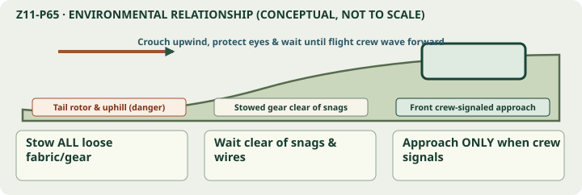

Z11-P65 · Navigation, weather and rescue · New manuscript
Prepare a safe clear waiting site for arriving ground or helicopter rescue
Keep the stranded party safe and avoid endangering arriving ground teams or rescue helicopters during extraction.
When it applies · Confirmed incoming ground rescue team or air ambulance/SAR helicopter approaching a waiting site.
Equipment · Weighted loose gear, eye/ear protection (hood/glasses), flashlight and clear group positioning.

Actions
- Secure EVERY lightweight loose object (tarps, sleeping pads, rain jackets, pack covers, trash bags) tightly inside weighted packs BEFORE any helicopter approaches—rotor downwash turns loose items into lethal debris.[N09, T01, ED]
- Move the entire group together to the upwind edge of a clear open space away from dead snags, powerlines and loose branches; crouch low protecting eyes from blowing grit/snow and stay put until flight crew explicitly wave you forward.[N09, E13, T01, ED]
- Never approach a helicopter from uphill (spinning main rotor dips dangerously low) or anywhere near the rear tail rotor—approach ONLY from the front/side within the pilot's direct sight when signaled by crew.[T01, N09, ED]
Failure recognition · Running enthusiastically downhill toward a landing rescue helicopter with a flapping orange tarp in hand.[T01, N09]
Verify · Confirm all loose items are stowed/weighted, group waits together clear of snags/wires and zero movement occurs until crew direct approach.[N09, T01, ED]
Stop or change course · If approaching ground or air crews encounter an unseen hazard (downed wire, thin ice, active rockfall), signal danger clearly from safe ground without rushing into the hazard.[T01, E12, N09]
Evidence and editorial notes
- E12 · Minnesota DNR · Ice Safety (current web edition)
- Section: Ice Safety > basic precautions · Conditions: Minnesota ice edges and travel routes
Support: No ice is universally safe. Strength can differ over short distances; appearance or tracks alone cannot establish a safe crossing.
Limitations: Currents, springs, snow insulation, and freeze-thaw cycles weaken ice invisibly. · Conflicting evidence: None; mandates shore-bound detour for foundational walking parties.
Editorial note: Maintains strict separation from specialized B013 ice chapters. · Specialist reviewer: Ice safety and search and rescue
Primary source · checked 2026-11-24 - E13 · USDA Forest Service · Hazard Tree Safety (agency PDF)
- Section: What You Can Do to Reduce Risk · Conditions: Forest campsites and stops
Support: Look for dead trees and falling material. Stay away from hazardous trees and move away when winds make the site unsafe.
Limitations: Internal decay and root rot can cause live-looking trees to fail in saturated soils or high wind. · Conflicting evidence: Does not specify a universal exclusion radius; tree height and slope govern fall reach.
Editorial note: Prevents false precision on fall-zone distance while requiring overhead screening. · Specialist reviewer: Land management and arboriculture safety
Primary source · checked 2026-11-24 - N09 · NPS · Outdoor Emergency Plan (current web edition)
- Section: Outdoor Emergency Plan > Signaling, Lost-Person Protocol and SAR Handoff · Conditions: Lost or overdue party awaiting search and rescue
Support: Stay put once lost unless immediate danger requires moving to nearby safer ground; preserve footprints/clues, make visible contrast signals in open clearings, answer whistle/voice calls and stay ready for responder instructions.
Limitations: Unplanned wandering expands search radius exponentially and delays rescue contact. · Conflicting evidence: None; reinforces B014-P16, P17 and P20.
Editorial note: Core evidence for lost-person psychology, signaling and SAR coordination cards. · Specialist reviewer: Search and rescue
Primary source · checked 2026-11-24 - T01 · American Red Cross · First Aid Steps (current web edition)
- Section: First Aid Steps > Check the scene; check the person · Conditions: Lay responder in United States; assess safety before contact
Support: Check scene safety, responsiveness, breathing and immediately life-threatening conditions.
Limitations: Lay guidance does not replace advanced clinical or rescue protocols. · Conflicting evidence: None; universal first-response opening gate.
Editorial note: Anchors scene-safety-first rule across Z01. · Specialist reviewer: EMS and wilderness medicine
Primary source · checked 2026-11-24
Source lineage · NPS emergency plan and aviation safety; new manuscript · Classification · New manuscript.